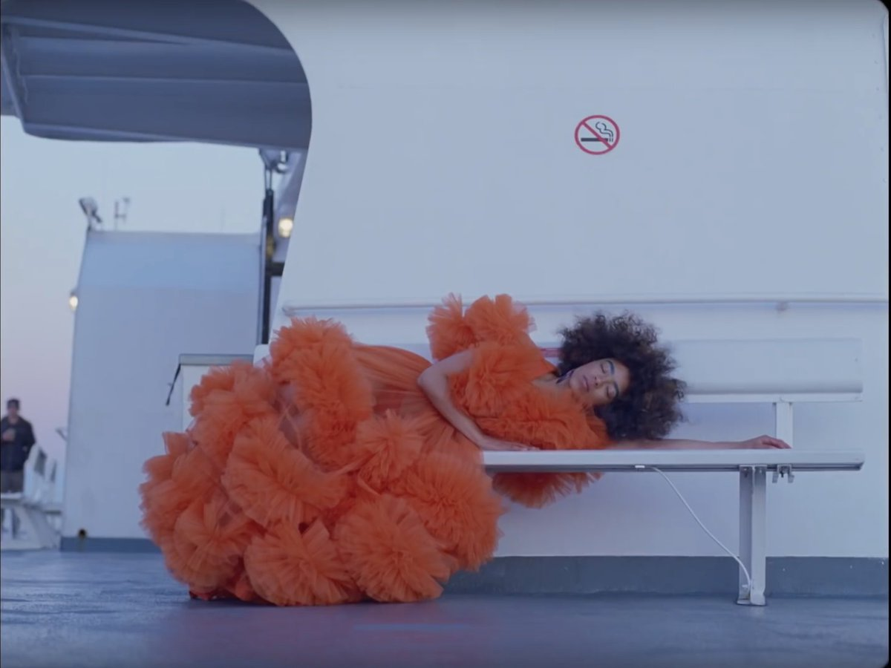
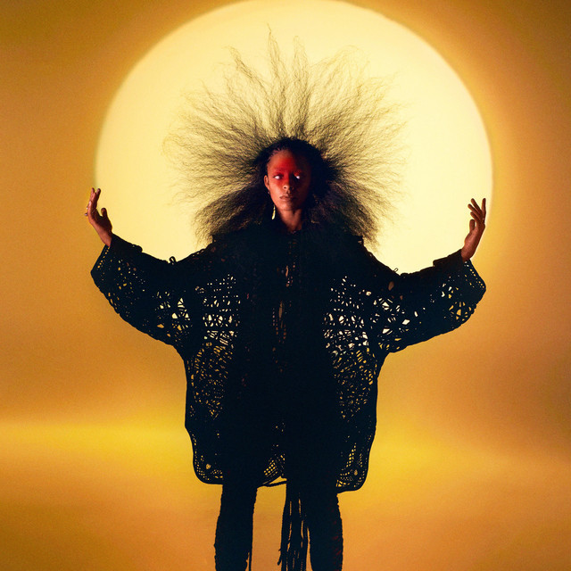

Lu has been working with a different frequency instead. “Using 432 hertz is like a reclamation of sound frequencies,” they say. “Taking back the power. In my research, I’ve found that 432 is said to be mathematically consistent with the patterns of the universe – and there’s evidence of that being healing and therapeutic.” The basic idea is that 432 hertz is said to be softer for us to process, and has a positive impact on relaxation and health (though this is a much-disputed theory).
 

There is something more broadly therapeutic and healing to Lu’s work, too. Their latest project is intended as a restorative space specifically for black, indigenous and person of colour (BIPOC) communities, with proceeds from the third part of the series split between different charitable organisations, including a fellowship for previously incarcerated Black mothers and caregivers in the US, and the collective Black Trans Femmes in the Arts.